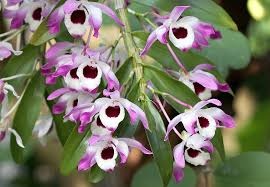

Introducción
Las orquídeas exóticas son una maravilla de la naturaleza, con una amplia variedad de formas, colores y fragancias que las hacen únicas y admiradas en todo el mundo.
Phalaenopsis Amabilis
Conocida como "Orquídea Mariposa", la Phalaenopsis Amabilis es una de las orquídeas más populares en el comercio de plantas ornamentales. Originaria de Asia, sus flores grandes y redondeadas pueden variar en color desde el blanco puro hasta el rosa intenso.
Es curioso comentar como las orquídeas son plantas muy aromáticas y como pueden cambiar su olor según la especie. La orquídea Cattleya es una de las que huele mejor y de forma más única, más propia de dicha planta. Sin embargo, hay algunas variedades que desprenden un olor parecido al de otras flores, como a rosas o gardenias. Asimismo, las orquídeas Bulbophylums pueden llegar a desprender un olor muy desagradable, así que evítalas a toda costa.
Años ha, la orquídea era considerada una planta medicinal y era utilizada para diferentes fines. Se decía que curaba la tos, la disentería, la mala digestión, el destemple, el dolor de cabeza, así como desinflama y alivia el malestar producido por la fiebre. En algunas regiones del sur de México todavía se comercializan las orquídeas silvestres con este objetivo.
Muchas personas no saben que la vainilla es también una especie de orquídea, muy utilizada ahora en la gastronomía e industria de cosméticos. Es, curiosamente, la especie de orquídea más cultivada en el globo.

Cattleya trianae
La Cattleya trianae, también conocida como "Flor de Mayo", es la flor nacional de Colombia. Sus flores son grandes, vistosas y fragantes, con pétalos y sépalos de tonos rosados a morados. Se encuentra principalmente en los bosques montañosos de América del Sur.
El significado de la flor cattleya varía según la cultura y la región, pero en general, se asocia con características como belleza, amor, refinamiento y admiración.
Las flores cattleya son originarias de América del Sur y América Central, específicamente en regiones tropicales y subtropicales. Se pueden encontrar en países como Brasil, Colombia, Venezuela, Ecuador, Perú, Honduras y otros de la región.
Estas orquídeas crecen en hábitats diversos, que van desde selvas tropicales hasta zonas montañosas y bosques húmedos. Su adaptabilidad a diferentes entornos ha llevado a la diversificación de especies de cattleya en toda la región, y muchas de ellas se han vuelto muy populares en la horticultura en todo el mundo debido a su belleza y elegancia.
Dendrobium Nobile
Originaria del sudeste asiático, la Dendrobium Nobile es conocida por su larga y delgada caña que lleva numerosas flores en racimos. Las flores pueden ser blancas, rosadas, púrpuras o amarillas, y algunas variedades tienen un aroma dulce y delicado.
Vanda coerulea
Esta orquídea es nativa de India, Tailandia y Myanmar. Sus flores son grandes, de color azul violáceo con un labio de color más claro. Es una especie que prefiere climas cálidos y húmedos, y se cultiva comúnmente en cestas colgantes.